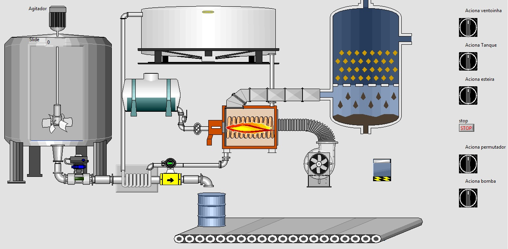
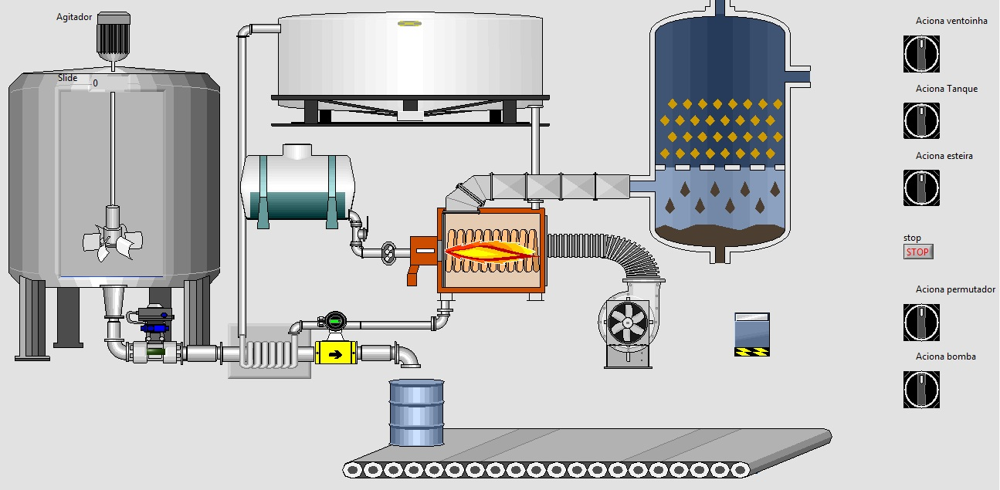
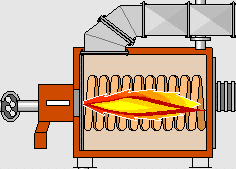

Supervis�rio
Exite hoje a necessidade de se montar pantas supervis�rias da industria com forma de se poder aumetnar o controle do sistema de produ��o.
Exite hoje a necessidade de se montar pantas supervis�rias da industria com forma de se poder aumetnar o controle do sistema de produ��o.
� uma inteface m�quina humano.
Em todos os seguimentos da industria e tercerio setor.
S�o baixos quando comparado ao custo benef�cio
N�o existe impedimento.
E o mercado � gigante para a incorpora��o do IoT.
Pagina responsiva!
Temperatura
Dados diário de temperatura
Humidade
Dados diário de humidade
Pressão
Dados diário de pressão